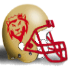
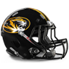
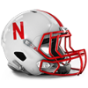
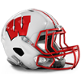
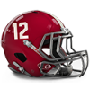

Army
Army Cambridge
Cambridge Heidelberg
Heidelberg Kings College London
Kings College London Maryland
Maryland Navy
Navy Otterbein
Otterbein Penn State
Penn State Rutgers
Rutgers Syracuse
Syracuse Illinois
Illinois Iowa
Iowa Michigan
Michigan Michigan State
Michigan State Minnesota
Minnesota Nebraska
Nebraska Northwestern
Northwestern Notre Dame
Notre Dame Ohio State
Ohio State Wisconsin
Wisconsin California
California Missouri
Missouri Oklahoma
Oklahoma Oregon
Oregon Stanford
Stanford Texas
Texas Texas A&M
Texas A&M UCLA
UCLA USC
USC Washington
Washington Alabama
Alabama Auburn
Auburn Clemson
Clemson Florida
Florida Florida State
Florida State Georgia
Georgia Kentucky
Kentucky LSU
LSU Miami (FL)
Miami (FL) West Virginia
West VirginiaNorth Senior Bowl announced!
The North has announced their Senior Bowl squad for 1981.
David Woodley - QB, 123/260, 2056 yds, 13 TD
Gary Hogeboom - QB, 246/421, 2763 yds, 29 TD
Mark Malone - QB, 181/358, 2097 yds, 12 TD
Ken Lacy - RB, 195 att, 828 yds, 6 TD
Michael Morton - RB, 197 att, 933 yds, 8 TD, 4 rec, 53 yds, 0 TD
Rick Kane - RB, 273 att, 1027 yds, 6 TD, 6 rec, 31 yds, 1 TD
Tim Spencer - FB, 87 att, 434 yds, 10 TD
John Scully - G, 42 Pancakes
Jim Hough - G, 42 Pancakes
Randy Cross - G, 47 Pancakes
Bryan Millard - T, 59 Pancakes
Harvey Salem - T, 52 Pancakes
Phil Pozderac - T, 50 Pancakes
Randy Grimes - C, 40 Pancakes
Mark Dennard - C, 31 Pancakes
Travis Tucker - TE, 27 rec, 232 yds, 3 TD
Jay Carroll - TE, 18 rec, 128 yds, 2 TD
Ron Johnson - WR, 34 rec, 553 yds, 6 TD
Clarence Weathers - WR, 64 rec, 764 yds, 3 TD
Leonard Thompson - WR, 54 rec, 706 yds, 3 TD
George Shorthose - WR, 67 rec, 677 yds, 2 TD
Jesse Bendross - WR, 60 rec, 493 yds, 5 TD
Earl Johnson - CB, 32 Tck, 4 Int, 1 Def TD, 1 FR
John Hendy - CB, 55 Tck, 2 Int, 1 Def TD
Rod McSwain - CB, 56 Tck, 2 Int, 1 Def TD, 1 FR
Mike Cofer - LB, 65 Tck, 3 Sck
Rick Dennison - LB, 52 Tck, 2 Sck, 1 Int, 1 FR
Randy Scott - LB, 67 Tck, 2 Sck, 1 Int, 1 FR
Tom Dinkel - LB, 39 Tck, 1 Int, 1 Def TD
Sanders Shiver - LB, 63 Tck, 1 Sck, 1 Int, 1 Def TD, 1 FR
Norwood Vann - LB, 61 Tck, 1 Sck, 2 FR
Charles Martin - DT, 23 Tck, 1 Sck
Tony Chickillo - DT, 22 Tck, 3 Sck, 1 FR
Mark Shumate - DT, 47 Tck
Bob Hamm - DT, 22 Tck, 2 Sck
Barney Chavous - DE, 57 Tck, 4 Sck, 1 FR
Booker Reese - DE, 12 Tck
Ben Rudolph - DE, 31 Tck, 4 Sck
Victor Scott - FS, 46 Tck, 2 Int, 1 Def TD
John Harris - FS, 42 Tck, 2 Int
Ronnie O'Bard - SS, 50 Tck, 1 Int, 1 FR
Ernest Gibson - SS, 30 Tck, 2 Int, 2 Def TD, 2 FR
Novo Bojovic - K, 27/42 FG
Greg Coleman - P, 5184 yards, 43.9 avg, 46 inside 20
South Senior Bowl announced!
The South has announced their Senior Bowl squad for 1981.
Bruce Mathison - QB, 47/138, 451 yds, 2 TD
Turk Schonert - QB, 169/326, 1848 yds, 6 TD
Gale Gilbert - QB, 279/522, 2869 yds, 16 TD
Ethan Horton - RB, 268 att, 1097 yds, 11 TD
Maurice Carthon - RB, 129 att, 576 yds, 6 TD, 9 rec, 39 yds, 2 TD
Ron Davenport - RB, 98 att, 653 yds, 4 TD
Woody Bennett - FB, 57 att, 354 yds, 3 TD, 6 rec, 37 yds, 0 TD
Randy Rasmussen - G, 39 Pancakes
Dan Alexander - G, 38 Pancakes
Keith Bishop - G, 38 Pancakes
Kevin Call - T, 52 Pancakes
Dave Huffman - T, 51 Pancakes
Kevin Belcher - T, 49 Pancakes
Dave Dalby - C, 33 Pancakes
Mark Cannon - C, 27 Pancakes
Darrell Nelson - TE, 36 rec, 296 yds, 3 TD
Reese McCall - TE, 16 rec, 176 yds, 2 TD
Gordon Banks - WR, 61 rec, 640 yds, 5 TD
Anthony Hancock - WR, 54 rec, 682 yds, 8 TD
Sylvester Stamps - WR, 61 rec, 643 yds, 6 TD
Stephen Starring - WR, 61 rec, 583 yds, 6 TD
Gene Branton - WR, 86 rec, 951 yds, 5 TD
Bobby Watkins - CB, 42 Tck, 2 Int, 1 FR
Johnnie Poe - CB, 40 Tck, 4 Int, 1 FR
Herb Welch - CB, 36 Tck, 2 Int
John Kaiser - LB, 61 Tck, 1 Int
Charles Bowser - LB, 72 Tck, 2 FR
Al Richardson - LB, 52 Tck
Lamonte Hunley - LB, 65 Tck, 1 Sck, 1 Int
Cliff Thrift - LB, 84 Tck, 1 Sck, 2 FR
Tony Caldwell - LB, 46 Tck, 2 Int, 1 Def TD
Chuck Ehin - DT, 34 Tck, 2 Sck
Manu Tuiasosopo - DT, 5 Tck, 3 Sck, 1 FR
DT FILLER - DT, 25 Tck, 3 Sck
Tony Degrate - DT, 30 Tck, 2 Sck
Sam Clancy - DE, 32 Tck, 5 Sck
Earl Wilson - DE, 30 Tck, 3 Sck
Don Smith - DE, 21 Tck, 3 Sck, 2 FR
Daryll Jones - FS, 38 Tck, 2 FR
Mike McLeod - FS, 33 Tck, 1 Int, 1 FR
Reggie Pleasant - SS, 39 Tck
Roger Jackson - SS, 23 Tck
Chris Bahr - K, 22/34 FG
Brian Hansen - P, 3830 yards, 44 avg, 35 inside 20
Prestige Updates
Gained Prestige:
+ 1 : Iowa Hawkeyes
+ 1 : Navy Midshipmen
+ 1 : Stanford Cardinal
+ 2 : Notre Dame Fighting Irish
+ 5 : Maryland Terrapins
Lost Prestige:
-1 : Army Black Knights
-1 : Florida State Seminoles
-1 : Kentucky Wildcats
-1 : Minnesota Golden Gophers
-1 : Washington Huskies
-2 : Auburn Tigers
-2 : California Golden Bears
-2 : Illinois Fighting Illini
-2 : LSU Tigers
-2 : Michigan Wolverines
-2 : Ohio State Buckeyes
-2 : Oregon Ducks
-2 : Otterbein Cardinals
-2 : Syracuse Orange
-2 : West Virginia Mountaineers
-3 : Cambridge Blues
-3 : Clemson Tigers
-3 : Texas A&M Aggies
-4 : Miami (FL) Hurricanes
-4 : Texas Longhorns
1981 Ray Guy Award Award
 Maryland Terrapins P, Brian Hansen has won the Ray Guy Award award for 1981.
Maryland Terrapins P, Brian Hansen has won the Ray Guy Award award for 1981.
1981 Lou Groza Award Award
 Washington Huskies K, Eddie Murray has won the Lou Groza Award award for 1981.
Washington Huskies K, Eddie Murray has won the Lou Groza Award award for 1981.
1981 Jim Thorpe Award Award

Kings College London Regents CB, Carl Lee has won the Jim Thorpe Award award for 1981.1981 Butkus Award Award
 Miami (FL) Hurricanes LB, Scott Studwell has won the Butkus Award award for 1981.
Miami (FL) Hurricanes LB, Scott Studwell has won the Butkus Award award for 1981.
1981 Bednarik Award Award
Maryland Terrapins DE, Julius Adams has won the Bednarik Award award for 1981.
1981 Outland Trophy Award
Maryland Terrapins T, Ron Heller has won the Outland Trophy award for 1981.
1981 John Mackey Award Award
 Navy Midshipmen TE, Kellen Winslow has won the John Mackey Award award for 1981.
Navy Midshipmen TE, Kellen Winslow has won the John Mackey Award award for 1981.
1981 Biletnikoff Award Award
 Penn State Nittany Lions WR, Renaldo Nehemiah has won the Biletnikoff Award award for 1981.
Penn State Nittany Lions WR, Renaldo Nehemiah has won the Biletnikoff Award award for 1981.
1981 Johnny Unitas Golden Arm Award Award
 Northwestern Wildcats QB, Gary Hogeboom has won the Johnny Unitas Golden Arm Award award for 1981.
Northwestern Wildcats QB, Gary Hogeboom has won the Johnny Unitas Golden Arm Award award for 1981.
1981 Davey O'Brien Award Award
Maryland Terrapins QB, Dan Marino has won the Davey O'Brien Award award for 1981.
1981 Doak Walker Award Award
 Rutgers Scarlet Knights RB, Greg Bell has won the Doak Walker Award award for 1981.
Rutgers Scarlet Knights RB, Greg Bell has won the Doak Walker Award award for 1981.
1981 Bronko Nagurski Trophy Award
Kings College London Regents CB, Carl Lee has won the Bronko Nagurski Trophy award for 1981.
1981 Walter Camp Award Award
Penn State Nittany Lions WR, Renaldo Nehemiah has won the Walter Camp Award award for 1981.
1981 Heisman Trophy Award
Penn State Nittany Lions WR, Renaldo Nehemiah has won the Heisman Trophy award for 1981.
Conference Players of the Year:
----International Conference----
Defense:
Lee, C. - CB, KCL (79 Tck, 10 Int, 2 Def TD)
Offense:
Willie Gault - WR, RUT (52 rec, 911 yds, 12 TD)
----Big Ten Conference----
Defense:
Judson, W. - CB, NW (68 Tck, 4 Int, 1 Def TD, 1 FR)
Offense:
Gary Clark - WR, IOWA (64 rec, 1322 yds, 14 TD)
----Pacific 10 Conference----
Defense:
Castille, J. - CB, MIZZOU (49 Tck, 3 Int, 2 Def TD, 1 FR)
Offense:
Marcus Allen - RB, ORE (377 att, 1492 yds, 8 TD, 16 rec, 63 yds, 3 TD)
----Southeastern Conference----
Defense:
Lewis, A. - CB, MIA (79 Tck, 4 Int, 3 Def TD, 2 FR)
Offense:
Butch Woolfolk - RB, UGA (278 att, 1328 yds, 6 TD, 13 rec, 214 yds, 2 TD)
All-American Team Announced
1981 All-American Team
QB Dan Marino - Maryland Terrapins (184/312, 2508 yds, 31 TD)
RB Greg Bell - Rutgers Scarlet Knights (366 att, 1726 yds, 15 TD, 14 rec, 83 yds, 0 TD)
FB Roger Craig - Texas A&M Aggies (77 att, 640 yds, 7 TD, 11 rec, 98 yds, 0 TD)
TE Kellen Winslow - Navy Midshipmen (53 rec, 394 yds, 6 TD)
WR Renaldo Nehemiah - Penn State Nittany Lions (82 rec, 1626 yds, 18 TD)
C Mike Webster - Texas A&M Aggies (58 Pancakes)
G Joe DeLamielleure - Notre Dame Fighting Irish (61 Pancakes)
T Jim Lachey - Oklahoma Sooners (74 Pancakes)
DT Steve McMichael - Iowa Hawkeyes (41 Tck, 6 Sck, 1 FR)
DE Chris Doleman - Northwestern Wildcats (64 Tck, 10 Sck, 3 FR)
LB Duane Bickett - Syracuse Orange (108 Tck, 1 Sck, 1 Int, 1 Def TD, 2 FR)
CB Carl Lee - Kings College London Regents (79 Tck, 10 Int, 2 Def TD)
SS Gill Byrd - Iowa Hawkeyes (93 Tck, 4 Sck, 1 Int, 1 Def TD, 2 FR)
FS David Croudip - UCLA Bruins (63 Tck, 3 Int, 1 Def TD)
K Nick Lowery - Iowa Hawkeyes (28/34 FG)
P Greg Coleman - Illinois Fighting Illini (5184 yards, 43.9 avg, 46 inside 20)
Southeastern Conference All-Conference Team Announced
1981 Southeastern Conference All-Conference Team.
QB Randall Cunningham - QB - Florida State Seminoles (226/370, 2075 yds, 16 TD)
RB Butch Woolfolk - RB - Georgia Bulldogs (278 att, 1328 yds, 6 TD, 13 rec, 214 yds, 2 TD)
FB Rob Carpenter - FB - Kentucky Wildcats (110 att, 404 yds, 2 TD)
TE Todd Christensen - TE - West Virginia Mountaineers (58 rec, 563 yds, 1 TD)
WR Steve Kreider - WR - Florida State Seminoles (90 rec, 1036 yds, 9 TD)
C Jay Hilgenberg - C - Alabama Crimson Tide (46 Pancakes)
G Kent Hill - G - Auburn Tigers (47 Pancakes)
T Mike Wilson - T - Clemson Tigers (60 Pancakes)
DT Darryl Grant - DT - Miami (FL) Hurricanes (40 Tck, 3 Sck)
DE George Martin - DE - Auburn Tigers (29 Tck, 6 Sck, 2 FR)
LB Scott Studwell - LB - Miami (FL) Hurricanes (95 Tck, 2 Sck, 1 Int, 1 Def TD, 2 FR)
CB Albert Lewis - CB - Miami (FL) Hurricanes (79 Tck, 4 Int, 3 Def TD, 2 FR)
SS Dennis Smith - SS - Alabama Crimson Tide (77 Tck, 1 Sck, 1 Int, 1 Def TD, 3 FR)
FS Ken Stills - FS - Clemson Tigers (33 Tck, 1 Sck, 2 Int, 1 Def TD, 1 FR)
K Fuad Reveiz - K - Alabama Crimson Tide (22/27 FG)
P Carl Birdsong - P - Clemson Tigers (3693 yards, 44 avg, 28 inside 20)
Pacific 10 Conference All-Conference Team Announced
1981 Pacific 10 Conference All-Conference Team.
QB John Elway - QB - UCLA Bruins (135/227, 1689 yds, 10 TD)
RB Eric Dickerson - RB - Texas A&M Aggies (268 att, 1696 yds, 8 TD, 13 rec, 139 yds, 2 TD)
FB Roger Craig - FB - Texas A&M Aggies (77 att, 640 yds, 7 TD, 11 rec, 98 yds, 0 TD)
TE Russ Francis - TE - USC Trojans (36 rec, 370 yds, 2 TD)
WR Reggie Langhorne - WR - Washington Huskies (79 rec, 995 yds, 11 TD)
C Mike Webster - C - Texas A&M Aggies (58 Pancakes)
G Randy Cross - G - Oregon Ducks (47 Pancakes)
T Jim Lachey - T - Oklahoma Sooners (74 Pancakes)
DT Fred Smerlas - DT - California Golden Bears (40 Tck, 5 Sck, 1 FR)
DE John Harty - DE - Oregon Ducks (38 Tck, 6 Sck, 2 FR)
LB Ken Fantetti - LB - Texas Longhorns (93 Tck, 1 Sck, 1 Int, 1 Def TD, 1 FR)
CB Mark Robinson - CB - Washington Huskies (55 Tck, 5 Int, 1 Def TD, 1 FR)
SS Keith Bostic - SS - UCLA Bruins (55 Tck, 3 Int, 1 Def TD, 1 FR)
FS David Croudip - FS - UCLA Bruins (63 Tck, 3 Int, 1 Def TD)
K Eddie Murray - K - Washington Huskies (29/38 FG)
P Chris Norman - P - California Golden Bears (3499 yards, 38.9 avg, 33 inside 20)
Big Ten Conference All-Conference Team Announced
1981 Big Ten Conference All-Conference Team.
QB Dave Krieg - QB - Notre Dame Fighting Irish (252/410, 3346 yds, 27 TD)
RB Lorenzo Hampton - RB - Wisconsin Badgers (251 att, 1483 yds, 14 TD)
FB Tim Spencer - FB - Notre Dame Fighting Irish (87 att, 434 yds, 10 TD)
TE David Lewis - TE - Notre Dame Fighting Irish (42 rec, 420 yds, 4 TD)
WR Gary Clark - WR - Iowa Hawkeyes (64 rec, 1322 yds, 14 TD)
C Bill Bryan - C - Minnesota Golden Gophers (47 Pancakes)
G Joe DeLamielleure - G - Notre Dame Fighting Irish (61 Pancakes)
T Anthony Munoz - T - Ohio State Buckeyes (65 Pancakes)
DT Steve McMichael - DT - Iowa Hawkeyes (41 Tck, 6 Sck, 1 FR)
DE Chris Doleman - DE - Northwestern Wildcats (64 Tck, 10 Sck, 3 FR)
LB Lawrence Taylor - LB - Iowa Hawkeyes (100 Tck, 4 Sck, 2 FR)
CB William Judson - CB - Northwestern Wildcats (68 Tck, 4 Int, 1 Def TD, 1 FR)
SS Gill Byrd - SS - Iowa Hawkeyes (93 Tck, 4 Sck, 1 Int, 1 Def TD, 2 FR)
FS Paul Moyer - FS - Notre Dame Fighting Irish (72 Tck, 3 Int)
K Nick Lowery - K - Iowa Hawkeyes (28/34 FG)
P Greg Coleman - P - Illinois Fighting Illini (5184 yards, 43.9 avg, 46 inside 20)
International Conference All-Conference Team Announced
1981 International Conference All-Conference Team.
QB Dan Marino - QB - Maryland Terrapins (184/312, 2508 yds, 31 TD)
RB Greg Bell - RB - Rutgers Scarlet Knights (366 att, 1726 yds, 15 TD, 14 rec, 83 yds, 0 TD)
FB Craig James - FB - Army Black Knights (52 att, 206 yds, 4 TD, 1 rec, 4 yds, 1 TD)
TE Kellen Winslow - TE - Navy Midshipmen (53 rec, 394 yds, 6 TD)
WR Renaldo Nehemiah - WR - Penn State Nittany Lions (82 rec, 1626 yds, 18 TD)
C Randy Grimes - C - Rutgers Scarlet Knights (40 Pancakes)
G Ed White - G - Army Black Knights (59 Pancakes)
T Ron Heller - T - Maryland Terrapins (68 Pancakes)
DT Mike Bell - DT - Navy Midshipmen (34 Tck, 4 Sck, 2 FR)
DE Julius Adams - DE - Maryland Terrapins (53 Tck, 5 Sck, 1 Sfty, 1 FR)
LB Duane Bickett - LB - Syracuse Orange (108 Tck, 1 Sck, 1 Int, 1 Def TD, 2 FR)
CB Carl Lee - CB - Kings College London Regents (79 Tck, 10 Int, 2 Def TD)
SS Shaun Gayle - SS - Navy Midshipmen (86 Tck, 1 Sck, 1 Int, 1 Sfty)
FS Eric Williams FS - FS - Heidelberg Student Princes (56 Tck, 2 Sck, 2 Int, 1 FR)
K Ray Wersching - K - Penn State Nittany Lions (25/29 FG)
P Ray Guy - P - Kings College London Regents (4060 yards, 44.1 avg, 39 inside 20)
Bowl Games Recruiting Update
9 players committed this week.
5 star players committed this week: 0.
4 star players committed this week: 0.
3 star players committed this week: 9.
2 star players committed this week: 0.
1 star players committed this week: 0.
0 players ranked in the top 100 recruits committed this week.
The most highly touted prospect committing this week was LB FILLER (a 3 star LB from CENTRAL MOUNTAIN HS ranked at #675) who committed to Notre Dame.
Pacific 10 Conference was the conference that netted the most recruits this week with a total of 4.
Syracuse Orange locked down the most prospects this week was as they got 2 recruits to sign.
The highest ranked uncommitted recruit is DE FILLER - DE. He is ranked at #399
Total Recruits committed this season is 1140.
Bowl Games Recruiting Update
18 players committed this week.
5 star players committed this week: 0.
4 star players committed this week: 0.
3 star players committed this week: 18.
2 star players committed this week: 0.
1 star players committed this week: 0.
0 players ranked in the top 100 recruits committed this week.
The most highly touted prospect committing this week was DE FILLER (a 3 star DE from PALOS VERDES HS ranked at #381) who committed to Navy.
Southeastern Conference was the conference that netted the most recruits this week with a total of 6.
Rutgers Scarlet Knights locked down the most prospects this week was as they got 3 recruits to sign.
The highest ranked uncommitted recruit is DE FILLER - DE. He is ranked at #399
Total Recruits committed this season is 1131.
Week 14 Recruiting Update
72 players committed this week.
5 star players committed this week: 0.
4 star players committed this week: 0.
3 star players committed this week: 72.
2 star players committed this week: 0.
1 star players committed this week: 0.
0 players ranked in the top 100 recruits committed this week.
The most highly touted prospect committing this week was DE FILLER (a 3 star DE from WAKEFIELD HS ranked at #385) who committed to Missouri.
International Conference was the conference that netted the most recruits this week with a total of 21.
Oregon Ducks locked down the most prospects this week was as they got 6 recruits to sign.
The highest ranked uncommitted recruit is DE FILLER - DE. He is ranked at #381
Total Recruits committed this season is 1113.
Big Ten Conference News: Fighting Irish racking up yards!
 The offense of the Fighting Irish is slaying everybody this year, posting 5232 total yards and 379 points thus far in 12 games. Quarterback Dave Krieg and receiver Mike Haynes have clowned on opponents to the tune of 984 yards this season, while Running Back Alvin Moore - RB has run for 637. The fat boys on the line have crushed the opposition for 251 pancakes this season while giving up only 8 quarterback sacks.
The offense of the Fighting Irish is slaying everybody this year, posting 5232 total yards and 379 points thus far in 12 games. Quarterback Dave Krieg and receiver Mike Haynes have clowned on opponents to the tune of 984 yards this season, while Running Back Alvin Moore - RB has run for 637. The fat boys on the line have crushed the opposition for 251 pancakes this season while giving up only 8 quarterback sacks.
Week 14: RB Butch Woolfolk (UGA) wins Offensive Player of the Week
 The honor comes after Woolfolk's 26 att, 162 yds, 1 TD, 2 rec, 44 yds, 2 TD performance against the Clemson Tigers. Woolfolk was signed 1 years ago.
The honor comes after Woolfolk's 26 att, 162 yds, 1 TD, 2 rec, 44 yds, 2 TD performance against the Clemson Tigers. Woolfolk was signed 1 years ago.
Woolfolk now has 1212 Rushing Yards and 5 Touchdowns for the season.
Georgia Bulldogs prestige bonus + 0.05
Week 14: CB Jeremiah Castille (MIZZOU) wins Defensive Player of the Week

CB Jeremiah Castille of the Missouri Tigers has earned the Defensive Player of the Week award. Castille finished with 5 Tck, 2 Int, 2 Def TD, 1 FR.Missouri Tigers prestige bonus + 0.05
Week 14 : Conference Players of the Week
International Conference Defensive player of the week: Darrell Green - CB, MD.
International Conference Offensive player of the week: Greg Bell - RB, RUT.
Big Ten Conference Defensive player of the week: Mike Richardson - CB, MICH.
Big Ten Conference Offensive player of the week: Gary Clark - WR, IOWA.
Pacific 10 Conference Defensive player of the week: Jeremiah Castille - CB, MIZZOU.
Pacific 10 Conference Offensive player of the week: Marcus Allen - RB, ORE.
Southeastern Conference Defensive player of the week: Tony Caldwell - LB, BAMA.
Southeastern Conference Offensive player of the week: Butch Woolfolk - RB, UGA.
Game Recaps for Week 14
Navy Midshipmen - 41, Army Black Knights - 20
Syracuse Orange - 34, Rutgers Scarlet Knights - 28
Otterbein Cardinals - 45, Heidelberg Student Princes - 7
Maryland Terrapins - 34, Penn State Nittany Lions - 27
Kings College London Regents - 17, Cambridge Blues - 9
Michigan State Spartans - 26, Notre Dame Fighting Irish - 24
Iowa Hawkeyes - 20, Nebraska Cornhuskers - 7
Michigan Wolverines - 24, Ohio State Buckeyes - 10
Wisconsin Badgers - 39, Minnesota Golden Gophers - 32
Northwestern Wildcats - 43, Illinois Fighting Illini - 17
Stanford Cardinal - 33, California Golden Bears - 30
Oklahoma Sooners - 49, Missouri Tigers - 23
Texas A&M Aggies - 30, Texas Longhorns - 20
Oregon Ducks - 38, Washington Huskies - 31
UCLA Bruins - 33, USC Trojans - 13
Georgia Bulldogs - 38, Clemson Tigers - 13
Kentucky Wildcats - 17, West Virginia Mountaineers - 9
Alabama Crimson Tide - 23, Auburn Tigers - 22
Miami (FL) Hurricanes - 14, LSU Tigers - 9
Florida Gators - 35, Florida State Seminoles - 32
Week 14 Recruiting Update
184 players committed this week.
5 star players committed this week: 4.
4 star players committed this week: 12.
3 star players committed this week: 168.
2 star players committed this week: 0.
1 star players committed this week: 0.
10 players ranked in the top 100 recruits committed this week.
The most highly touted prospect committing this week was Keyshawn Johnson (a 5 star WR from FITCH HS ranked at #15) who committed to Alabama.
Big Ten Conference was the conference that netted the most recruits this week with a total of 51.
Michigan Wolverines locked down the most prospects this week was as they got 10 recruits to sign.
The highest ranked uncommitted recruit is DE FILLER - DE. He is ranked at #381
Total Recruits committed this season is 1041.
Criticism of FS Robinson (FLA) goes public.
A recent interaction between Eugene Robinson - FS (FLA) and Vince Dooley (HC) has leaked to the media. The split between Robinson and HC Dooley has reached the public view and it is not pretty. Yet, things escalated further after recent criticism of Robinson from the coach.
Reggie White - DE (NEB) thanks coaches for his recent performance.
Reggie White - DE (NEB) opened up in an interview about all the praise from Bear Bryant (HC). Bear Bryant (HC) getting along well with White. The player stated he was recently humbled and honored by praise from the coach.
Big Ten Conference News: Michigan State Spartans: A no Pass Zone.
 Spartans pass defense this year has been dynamite this season, giving up only 1564 in 11 games. Said one defensive coach, ‘To get a group of guys to play like that, that is what every defensive minded coach dreams of.’.
Spartans pass defense this year has been dynamite this season, giving up only 1564 in 11 games. Said one defensive coach, ‘To get a group of guys to play like that, that is what every defensive minded coach dreams of.’.
Nebraska Cornhuskers surprise everyone!

The Nebraska Cornhuskers fans are celebrating after the Cornhuskers took down the Northwestern Wildcats.In a superb effort the Cornhuskers kept at it, and brought home the win. The Wildcats are widely considered to be the better of the two programs, but with the Cornhuskers winning the fans are hoping that the Cornhuskers will soon be able to dance with the big boys.
It's all about Nathan.
According to sources within the building the diva-like antics of Tony Nathan - RB is annoying coaches. He does not seem to get that football is a team sport. He always makes everything about him.
Maryland Terrapins prestige penalty - 0.05
Week 13: WR Gary Clark (IOWA) wins Offensive Player of the Week
 In a stellar outing, Gary Clark of Iowa Hawkeyes caught 5 passes for 126 yards and 2 touchdowns, contributing significantly to a 44-14 win over Wisconsin Badgers. His performance rightfully earned him the Offensive Player of the Week honors.
In a stellar outing, Gary Clark of Iowa Hawkeyes caught 5 passes for 126 yards and 2 touchdowns, contributing significantly to a 44-14 win over Wisconsin Badgers. His performance rightfully earned him the Offensive Player of the Week honors.
Iowa Hawkeyes prestige bonus + 0.05
Week 13: FS Victor Scott (RUT) wins Defensive Player of the Week
This week's standout on defense is Victor Scott from the Rutgers Scarlet Knights. He delivered a remarkable performance in the Scarlet Knights victory against the Heidelberg Student Princes, tallying 1 interceptions and 8 tackles, leading the team to a 36 to 33 win.
Rutgers Scarlet Knights prestige bonus + 0.05
Week 13 : Conference Players of the Week
International Conference Defensive player of the week: Victor Scott - FS, RUT.
International Conference Offensive player of the week: Ethan Horton - RB, HEI.
Big Ten Conference Defensive player of the week: Gill Byrd - SS, IOWA.
Big Ten Conference Offensive player of the week: Gary Clark - WR, IOWA.
Pacific 10 Conference Defensive player of the week: David Croudip - FS, UCLA.
Pacific 10 Conference Offensive player of the week: Darrin Nelson - RB, USC.
Southeastern Conference Defensive player of the week: Scott Studwell - LB, MIA.
Southeastern Conference Offensive player of the week: Oliver Luck - QB, FLA.
Game Recaps for Week 13
Nebraska Cornhuskers - 30, Northwestern Wildcats - 22
Maryland Terrapins - 21, Cambridge Blues - 10
Miami (FL) Hurricanes - 26, Kentucky Wildcats - 25
Florida Gators - 34, LSU Tigers - 10
Washington Huskies - 30, Oklahoma Sooners - 17
Iowa Hawkeyes - 44, Wisconsin Badgers - 14
West Virginia Mountaineers - 26, Florida State Seminoles - 14
UCLA Bruins - 55, Missouri Tigers - 28
Rutgers Scarlet Knights - 36, Heidelberg Student Princes - 33
Illinois Fighting Illini - 17, Minnesota Golden Gophers - 14
Kings College London Regents - 17, Syracuse Orange - 7
USC Trojans - 38, Oregon Ducks - 3
Week 13 Recruiting Update
169 players committed this week.
5 star players committed this week: 9.
4 star players committed this week: 8.
3 star players committed this week: 152.
2 star players committed this week: 0.
1 star players committed this week: 0.
10 players ranked in the top 100 recruits committed this week.
The most highly touted prospect committing this week was Jonathan Ogden (a 5 star T from WAYZATA HS ranked at #4) who committed to Michigan.
Pacific 10 Conference was the conference that netted the most recruits this week with a total of 52.
Nebraska Cornhuskers locked down the most prospects this week was as they got 8 recruits to sign.
The highest ranked uncommitted recruit is Keyshawn Johnson - WR. He is ranked at #15
Total Recruits committed this season is 857.
Zach Thomas - LB commits to Stanford.
 Zach Thomas has committed to the Cardinal.
Zach Thomas has committed to the Cardinal.
Thomas is widely considered to be one of the top ten prospects in this years recruiting class, and a lot of eyes have been on the LB from SOCORRO HS.
Thomas was also pursued by Clemson Tigers, Northwestern Wildcats, Cambridge Blues, Navy Midshipmen, Oregon Ducks, Nebraska Cornhuskers, LSU Tigers, Rutgers Scarlet Knights, Army Black Knights, Maryland Terrapins, Texas Longhorns, Georgia Bulldogs, California Golden Bears, Kings College London Regents, UCLA Bruins, Heidelberg Student Princes, Wisconsin Badgers, Oklahoma Sooners, Iowa Hawkeyes, Florida State Seminoles, Florida Gators, Auburn Tigers, Texas A&M Aggies, and West Virginia Mountaineers.
Alan Page - DT commits to Kentucky.
 Alan Page has committed to the Wildcats.
Alan Page has committed to the Wildcats.
Page is widely considered to be one of the top ten prospects in this years recruiting class, and a lot of eyes have been on the DT from ROYAL PALM BEACH HS.
Page was also pursued by Oregon Ducks, Syracuse Orange, Missouri Tigers, Northwestern Wildcats, Michigan Wolverines, Clemson Tigers, Navy Midshipmen, LSU Tigers, Maryland Terrapins, Michigan State Spartans, Washington Huskies, Rutgers Scarlet Knights, Army Black Knights, Stanford Cardinal, Ohio State Buckeyes, Texas Longhorns, Oklahoma Sooners, California Golden Bears, Kings College London Regents, Georgia Bulldogs, Miami (FL) Hurricanes, UCLA Bruins, Alabama Crimson Tide, Minnesota Golden Gophers, Heidelberg Student Princes, Wisconsin Badgers, Iowa Hawkeyes, Florida State Seminoles, Florida Gators, and Otterbein Cardinals.
Jonathan Ogden - T commits to Michigan.
 Jonathan Ogden has committed to the Wolverines.
Jonathan Ogden has committed to the Wolverines.
Ogden is widely considered to be one of the top ten prospects in this years recruiting class, and a lot of eyes have been on the T from WAYZATA HS.
Ogden was also pursued by USC Trojans, Oregon Ducks, Navy Midshipmen, Northwestern Wildcats, Penn State Nittany Lions, Cambridge Blues, Nebraska Cornhuskers, Missouri Tigers, Michigan State Spartans, Maryland Terrapins, Notre Dame Fighting Irish, Stanford Cardinal, Texas Longhorns, Illinois Fighting Illini, Otterbein Cardinals, Alabama Crimson Tide, Minnesota Golden Gophers, Heidelberg Student Princes, Wisconsin Badgers, Kings College London Regents, Iowa Hawkeyes, Florida Gators, Texas A&M Aggies, West Virginia Mountaineers, Ohio State Buckeyes, Oklahoma Sooners, Rutgers Scarlet Knights, California Golden Bears, Georgia Bulldogs, UCLA Bruins, Miami (FL) Hurricanes, and LSU Tigers.
Prestige Updates
Prestige Changes for week 13
Gains:
Wisconsin Badgers put the hammer on Michigan Wolverines : Prestige bonus + 0.05
Iowa Hawkeyes lit up the scoreboard against the Illinois Fighting Illini : Prestige bonus + 0.05
Losses:
Michigan Wolverines got trampled by the Wisconsin Badgers : Prestige loss - 0.10
Illinois Fighting Illini was walked all over by the Iowa Hawkeyes : Prestige loss - 0.10
League News: Nittany Lions racking up yards!
The offense of the Nittany Lions is slaying everybody this year, posting 4927 total yards and 382 points thus far in 11 games. Quarterback Dan Fouts and receiver Renaldo Nehemiah have tag-teamed to the tune of 1560 yards this season, while Running Back Joe Cribbs - RB has piled up for 1008. The o-linemen have steamrolled opponents for 260 pancakes this season while giving up only 16 quarterback sacks.
Week 12: RB Lorenzo Hampton (WIS) wins Offensive Player of the Week

Wisconsin Badgers running back Lorenzo Hampton had a remarkable game, rushing for 174 yards and scoring 4 touchdowns in the Badgers win against Michigan Wolverines. His explosive runs helped seal the 53-7 victory, earning him this week's Offensive Player of the Week title.Wisconsin Badgers prestige bonus + 0.05
Week 12: CB Albert Lewis (MIA) wins Defensive Player of the Week
CB Albert Lewis of the Miami (FL) Hurricanes has earned the Defensive Player of the Week award. Lewis finished with 9 Tck, 2 Int, 2 Def TD.
Miami (FL) Hurricanes prestige bonus + 0.05
Week 12 : Conference Players of the Week
International Conference Defensive player of the week: Carl Lee - CB, KCL.
International Conference Offensive player of the week: Renaldo Nehemiah - WR, PSU.
Big Ten Conference Defensive player of the week: Lyle Alzado - DE, IOWA.
Big Ten Conference Offensive player of the week: Lorenzo Hampton - RB, WIS.
Pacific 10 Conference Defensive player of the week: Carl Hairston - DE, WASH.
Pacific 10 Conference Offensive player of the week: James Brooks - RB, WASH.
Southeastern Conference Defensive player of the week: Albert Lewis - CB, MIA.
Southeastern Conference Offensive player of the week: Butch Woolfolk - RB, UGA.
Game Recaps for Week 12
Otterbein Cardinals - 30, Penn State Nittany Lions - 29
Kings College London Regents - 38, Army Black Knights - 17
Northwestern Wildcats - 34, Michigan State Spartans - 3
Notre Dame Fighting Irish - 42, Nebraska Cornhuskers - 28
Rutgers Scarlet Knights - 27, Cambridge Blues - 24
Miami (FL) Hurricanes - 35, Auburn Tigers - 10
Kentucky Wildcats - 17, Florida Gators - 14
Washington Huskies - 31, Texas Longhorns - 17
Wisconsin Badgers - 53, Michigan Wolverines - 7
Georgia Bulldogs - 42, Florida State Seminoles - 10
California Golden Bears - 30, UCLA Bruins - 24
Clemson Tigers - 20, West Virginia Mountaineers - 13
Stanford Cardinal - 30, Missouri Tigers - 17
Maryland Terrapins - 44, Heidelberg Student Princes - 14
Iowa Hawkeyes - 44, Illinois Fighting Illini - 3
Navy Midshipmen - 37, Syracuse Orange - 10
Oklahoma Sooners - 23, USC Trojans - 7
Week 12: RB Bill Johnson (TEX) has suffered a major injury!
 Texas Longhorns's running back Bill Johnson may be ruled out for the next few games due to an injury: Ruptured Disc (Back). "His presence will be missed," said Coach Longhorns as the team prepares for their next matchup.
Texas Longhorns's running back Bill Johnson may be ruled out for the next few games due to an injury: Ruptured Disc (Back). "His presence will be missed," said Coach Longhorns as the team prepares for their next matchup.
Week 12 Recruiting Update
211 players committed this week.
5 star players committed this week: 11.
4 star players committed this week: 64.
3 star players committed this week: 136.
2 star players committed this week: 0.
1 star players committed this week: 0.
33 players ranked in the top 100 recruits committed this week.
The most highly touted prospect committing this week was Ray Lewis (a 5 star LB from HIGHLAND SPRINGS HS ranked at #2) who committed to Georgia.
International Conference was the conference that netted the most recruits this week with a total of 55.
Army Black Knights locked down the most prospects this week was as they got 10 recruits to sign.
The highest ranked uncommitted recruit is Jonathan Ogden - T. He is ranked at #4
Total Recruits committed this season is 688.
Lawyer Milloy - SS commits to Oregon.
 Lawyer Milloy has committed to the Ducks.
Lawyer Milloy has committed to the Ducks.
Milloy is widely considered to be one of the top ten prospects in this years recruiting class, and a lot of eyes have been on the SS from SEGERSTROM HS.
Milloy was also pursued by Cambridge Blues, Michigan Wolverines, Clemson Tigers, USC Trojans, Northwestern Wildcats, LSU Tigers, Army Black Knights, Kentucky Wildcats, Rutgers Scarlet Knights, Texas Longhorns, Miami (FL) Hurricanes, Otterbein Cardinals, Minnesota Golden Gophers, California Golden Bears, Oklahoma Sooners, Heidelberg Student Princes, UCLA Bruins, Wisconsin Badgers, Texas A&M Aggies, Missouri Tigers, Nebraska Cornhuskers, Washington Huskies, Illinois Fighting Illini, Michigan State Spartans, Notre Dame Fighting Irish, Auburn Tigers, and Syracuse Orange.
Brian Dawkins - SS commits to LSU.
 Brian Dawkins has committed to the Tigers.
Brian Dawkins has committed to the Tigers.
Dawkins is widely considered to be one of the top ten prospects in this years recruiting class, and a lot of eyes have been on the SS from DOUGLAS HS.
Dawkins was also pursued by Cambridge Blues, Oregon Ducks, Michigan Wolverines, Nebraska Cornhuskers, Penn State Nittany Lions, USC Trojans, Syracuse Orange, Michigan State Spartans, Maryland Terrapins, Army Black Knights, Kentucky Wildcats, Notre Dame Fighting Irish, Washington Huskies, Ohio State Buckeyes, Texas Longhorns, Miami (FL) Hurricanes, Otterbein Cardinals, Minnesota Golden Gophers, California Golden Bears, Oklahoma Sooners, Georgia Bulldogs, Heidelberg Student Princes, UCLA Bruins, Wisconsin Badgers, Auburn Tigers, Florida Gators, Florida State Seminoles, Texas A&M Aggies, Missouri Tigers, Clemson Tigers, Northwestern Wildcats, Illinois Fighting Illini, and Rutgers Scarlet Knights.
Ray Lewis - LB commits to Georgia.
Ray Lewis has committed to the Bulldogs.
Lewis is widely considered to be one of the top ten prospects in this years recruiting class, and a lot of eyes have been on the LB from HIGHLAND SPRINGS HS.
Lewis was also pursued by Northwestern Wildcats, Clemson Tigers, Cambridge Blues, Navy Midshipmen, USC Trojans, Oregon Ducks, Nebraska Cornhuskers, Michigan Wolverines, Penn State Nittany Lions, Washington Huskies, Army Black Knights, Maryland Terrapins, Kentucky Wildcats, Notre Dame Fighting Irish, Illinois Fighting Illini, Ohio State Buckeyes, Texas Longhorns, Miami (FL) Hurricanes, Alabama Crimson Tide, California Golden Bears, Kings College London Regents, Heidelberg Student Princes, Wisconsin Badgers, Oklahoma Sooners, Iowa Hawkeyes, Florida State Seminoles, Auburn Tigers, West Virginia Mountaineers, and Syracuse Orange.
Terrell Owens - WR commits to Alabama.

Terrell Owens has committed to the Crimson Tide.Owens is widely considered to be one of the top ten prospects in this years recruiting class, and a lot of eyes have been on the WR from TRINITY HS.
Owens was also pursued by Penn State Nittany Lions, Nebraska Cornhuskers, Cambridge Blues, Oregon Ducks, LSU Tigers, Michigan State Spartans, Stanford Cardinal, Kentucky Wildcats, Notre Dame Fighting Irish, Ohio State Buckeyes, Texas Longhorns, Illinois Fighting Illini, Oklahoma Sooners, Otterbein Cardinals, Minnesota Golden Gophers, California Golden Bears, Kings College London Regents, Heidelberg Student Princes, UCLA Bruins, Wisconsin Badgers, Iowa Hawkeyes, Auburn Tigers, Florida Gators, Texas A&M Aggies, Navy Midshipmen, Georgia Bulldogs, West Virginia Mountaineers, USC Trojans, Michigan Wolverines, Maryland Terrapins, Florida State Seminoles, Missouri Tigers, Northwestern Wildcats, Army Black Knights, and Rutgers Scarlet Knights.
 The Oklahoma Sooners fans are celebrating after the Sooners took down the California Golden Bears.
The Oklahoma Sooners fans are celebrating after the Sooners took down the California Golden Bears. West Virginia Mountaineers's Riki Ellison was a defensive powerhouse in Week 11 of the 1981. The linebacker tallied 9 tackles and forced 0 fumbles in the nail-biting win against Miami (FL) Hurricanes, securing the victory for the Mountaineers. With 24 tackles this season, Ellison is clearly making a name for himself after signing in 0.
West Virginia Mountaineers's Riki Ellison was a defensive powerhouse in Week 11 of the 1981. The linebacker tallied 9 tackles and forced 0 fumbles in the nail-biting win against Miami (FL) Hurricanes, securing the victory for the Mountaineers. With 24 tackles this season, Ellison is clearly making a name for himself after signing in 0. With an outstanding effort the Texas A&M Aggies pull off the upset against Washington Huskies.
With an outstanding effort the Texas A&M Aggies pull off the upset against Washington Huskies. The Heidelberg Student Princes surprises everyone with an unlikely road win against Penn State Nittany Lions.
The Heidelberg Student Princes surprises everyone with an unlikely road win against Penn State Nittany Lions. Willie Anderson has committed to the Trojans.
Willie Anderson has committed to the Trojans. Reports out of California Golden Bears indicate that James Maness - WR is getting on the nerves of teammates. An anonymous player said: 'It is hard to keep focus on the field, when you keep hearing him open his load mouth everywhere you go'.
Reports out of California Golden Bears indicate that James Maness - WR is getting on the nerves of teammates. An anonymous player said: 'It is hard to keep focus on the field, when you keep hearing him open his load mouth everywhere you go'. The Clemson Tigers have managed an unlikely win against Miami (FL) Hurricanes.
The Clemson Tigers have managed an unlikely win against Miami (FL) Hurricanes. With an outstanding effort the Army Black Knights pull off the upset against Penn State Nittany Lions.
With an outstanding effort the Army Black Knights pull off the upset against Penn State Nittany Lions. The Florida Gators fans are celebrating after the Gators took down the Clemson Tigers.
The Florida Gators fans are celebrating after the Gators took down the Clemson Tigers. The Florida State Seminoles fans are celebrating after the Seminoles took down the Auburn Tigers.
The Florida State Seminoles fans are celebrating after the Seminoles took down the Auburn Tigers. Mike Quick had a breakout game, racking up 3 touchdowns and 173 yards to help Illinois Fighting Illini secure a win over Auburn Tigers with a score of 54-44.
Mike Quick had a breakout game, racking up 3 touchdowns and 173 yards to help Illinois Fighting Illini secure a win over Auburn Tigers with a score of 54-44. The team in the Big Ten Conference with the second most free scholarships this season is Iowa Hawkeyes with 28. Surely they will put extra pressure on the Ohio State Buckeyes competing for their recruits. For the record, the team in the Big Ten Conference with the least scholarships to offer this season is Michigan Wolverines with 32 open slots.
The team in the Big Ten Conference with the second most free scholarships this season is Iowa Hawkeyes with 28. Surely they will put extra pressure on the Ohio State Buckeyes competing for their recruits. For the record, the team in the Big Ten Conference with the least scholarships to offer this season is Michigan Wolverines with 32 open slots.  LB Dinkel absolutely dominated in the Golden Gophers 24-10 game with the Washington Huskies. He finished with 2 Tck, 1 Int, 1 Def TD.
LB Dinkel absolutely dominated in the Golden Gophers 24-10 game with the Washington Huskies. He finished with 2 Tck, 1 Int, 1 Def TD.